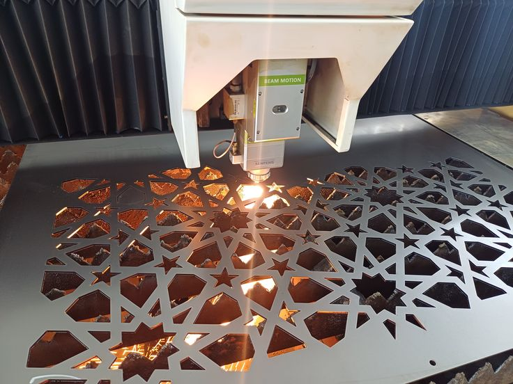
Kami melayani jasa potong, ukir, dan engraving akrilik, kayu, MDF, stainless steel, hingga kuningan dengan toleransi presisi hingga ±0.05mm. Cocok untuk kebutuhan signage, furniture custom, dekorasi interior, hingga komponen industri.
Didukung mesin CNC router, fiber laser, CO2 laser, dan galvo laser untuk hasil presisi pada berbagai material.
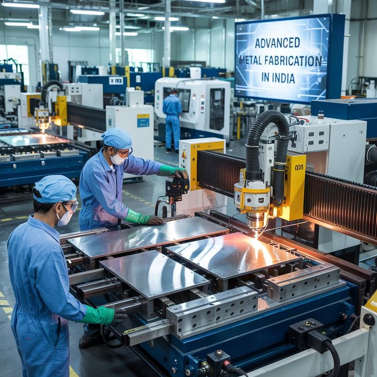
Pemotongan dan pengukiran presisi untuk kayu, MDF, dan akrilik dengan detail desain yang kompleks dan rapi.
Tanya Layanan Ini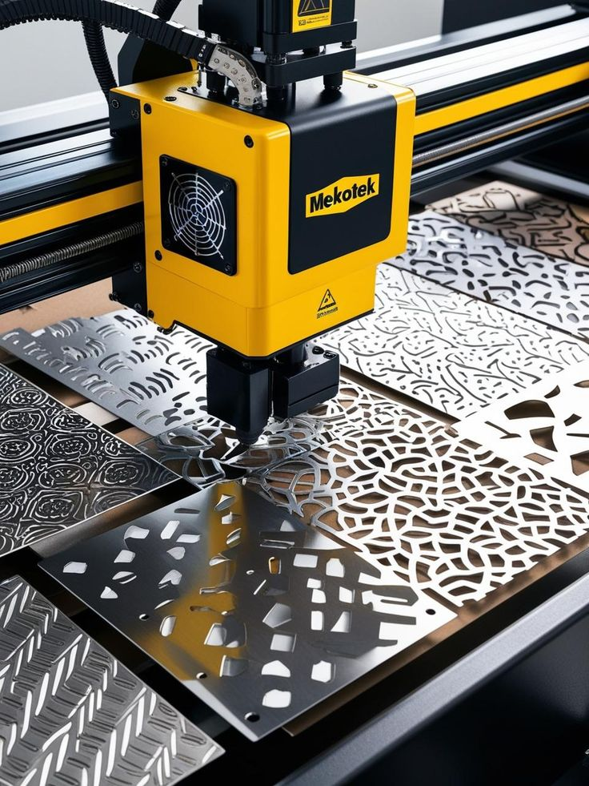
Pemotongan logam dengan kecepatan dan akurasi tinggi untuk stainless steel, mild steel, hingga kuningan.
Tanya Layanan Ini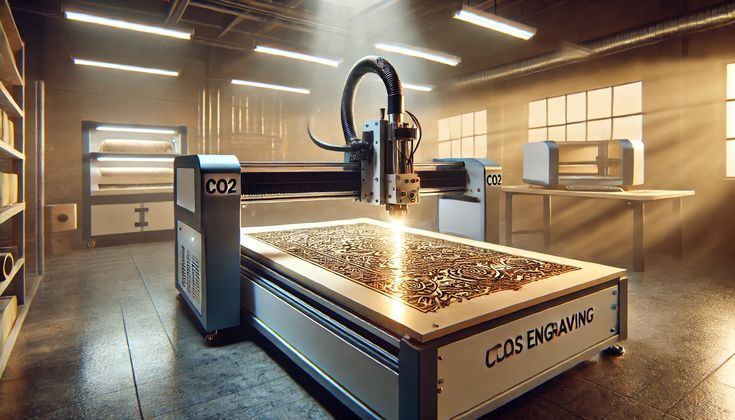
Solusi cutting & engraving untuk akrilik, kayu tipis, kertas, dan kain dengan hasil tepi yang halus.
Tanya Layanan Ini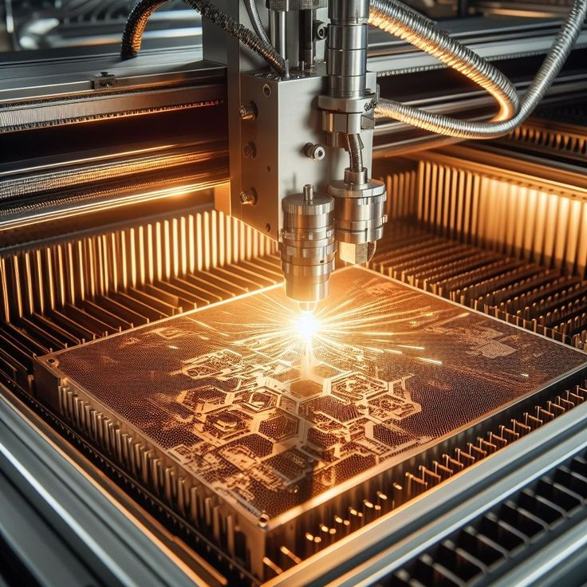
Penandaan dan engraving permanen untuk logo, nomor seri, atau detail kecil pada permukaan logam dan plastik.
Tanya Layanan IniKombinasi teknologi mesin terkini, tim berpengalaman, dan kontrol kualitas ketat di setiap tahap produksi.
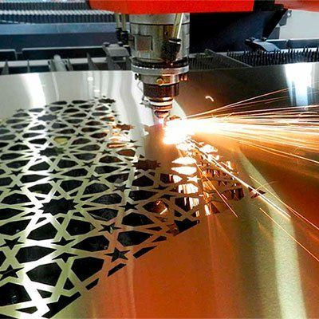
Toleransi pemotongan hingga ±0.05mm untuk hasil yang konsisten dan akurat di setiap detail.
Estimasi waktu produksi yang jelas dan pengiriman tepat waktu sesuai kesepakatan.
Didukung operator dan desainer berpengalaman yang siap membantu menyempurnakan desain Anda.
Tersedia berbagai pilihan material berkualitas, atau gunakan material dari Anda sendiri.
Penawaran transparan tanpa biaya tersembunyi, sesuai dengan kualitas yang diberikan.
Setiap hasil produksi melewati quality check sebelum dikirim ke tangan Anda.
Sebagian dari proyek laser cutting & CNC yang telah kami kerjakan untuk klien dari berbagai industri.
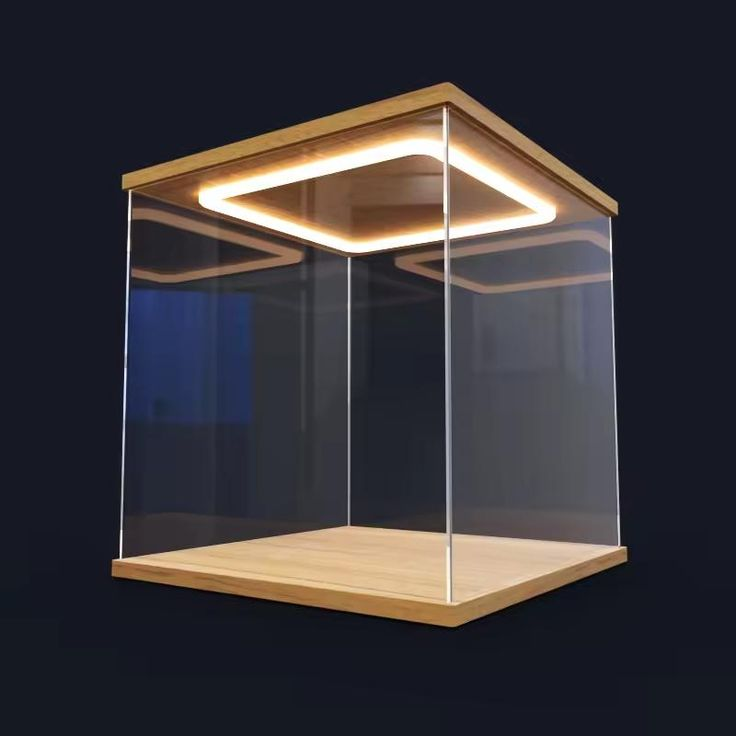
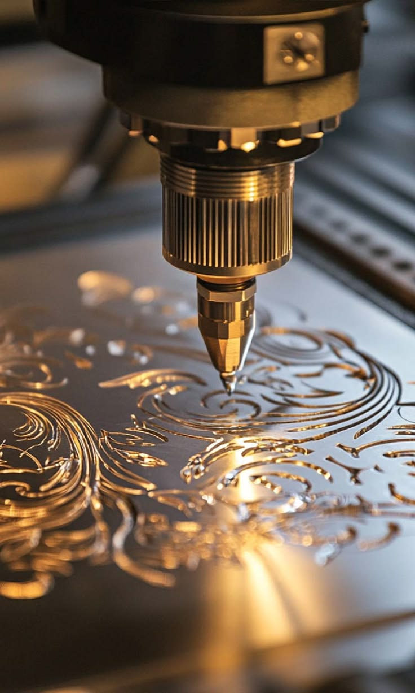
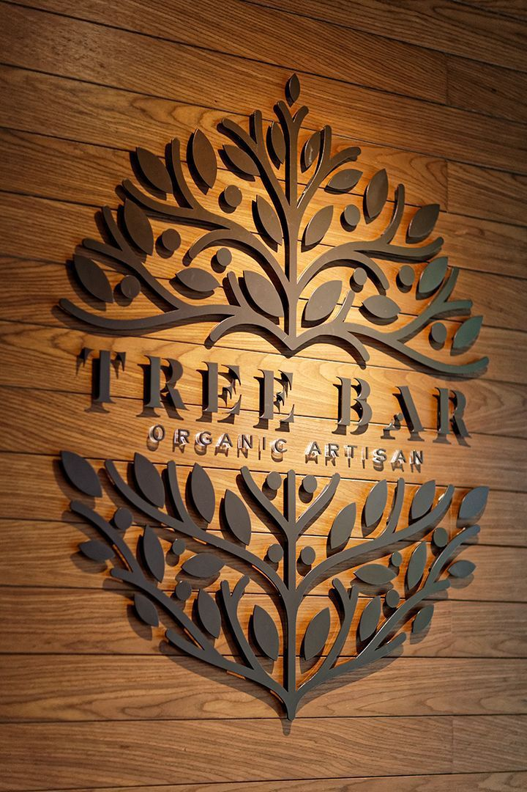
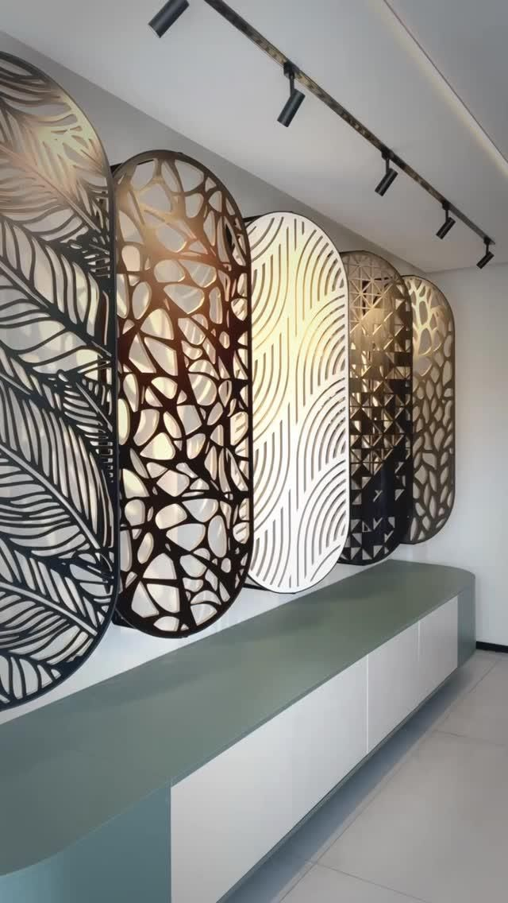
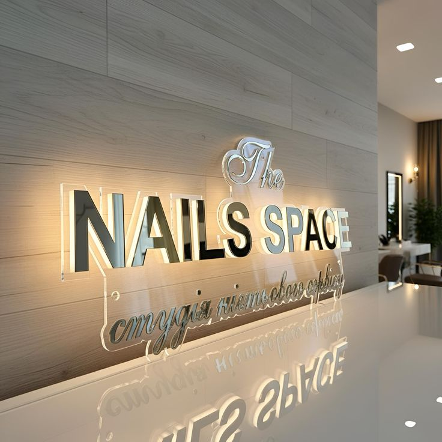
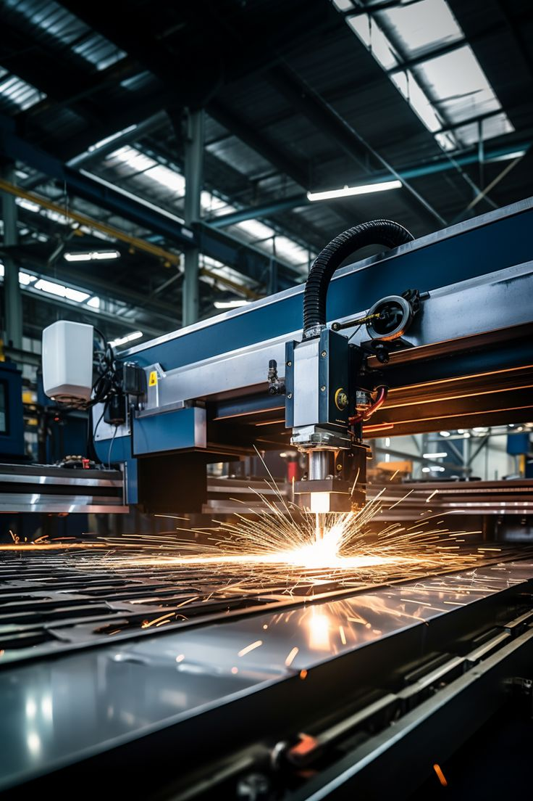
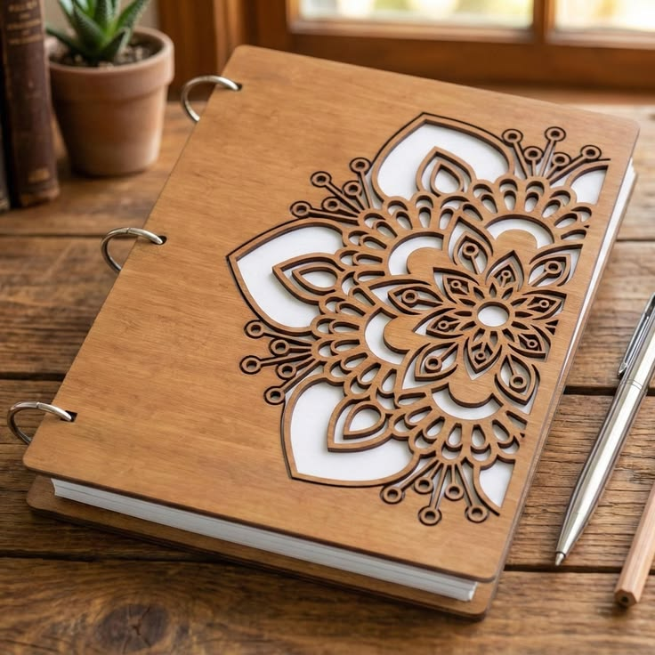
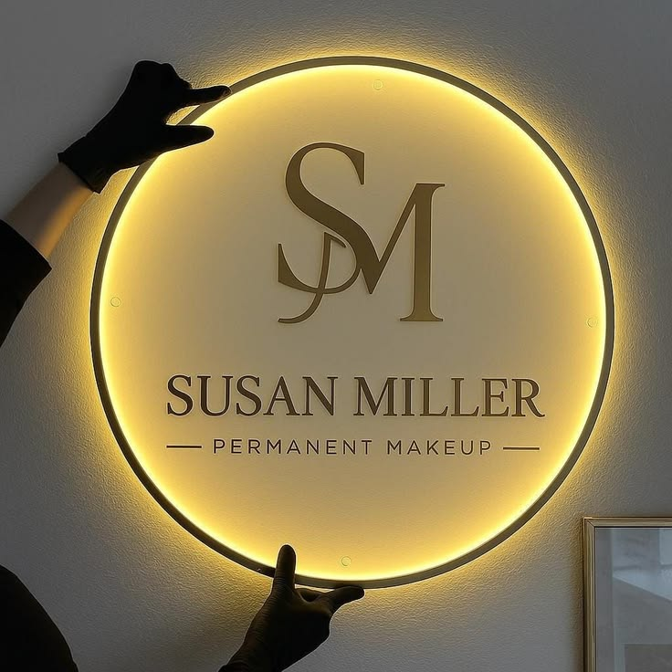
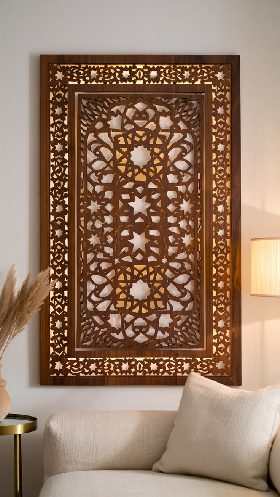
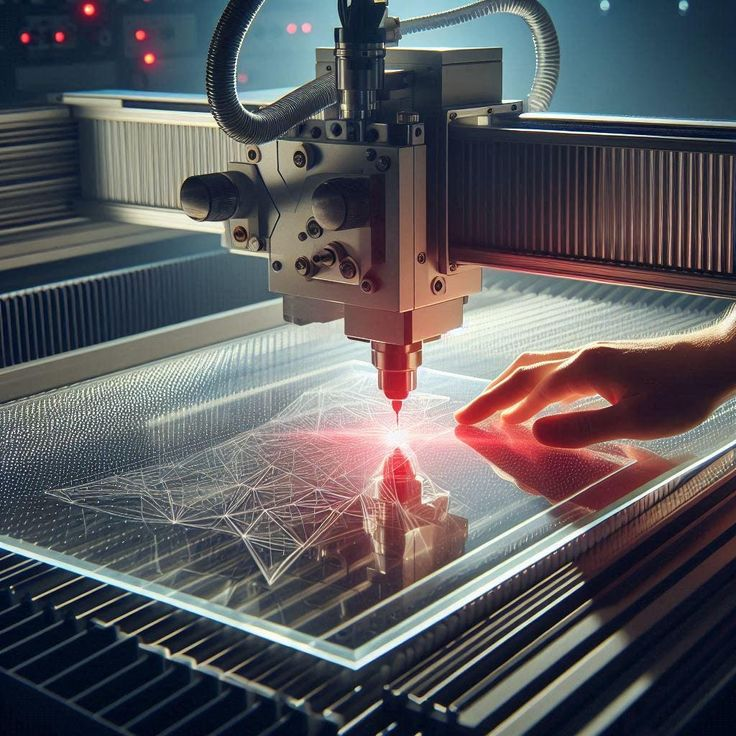
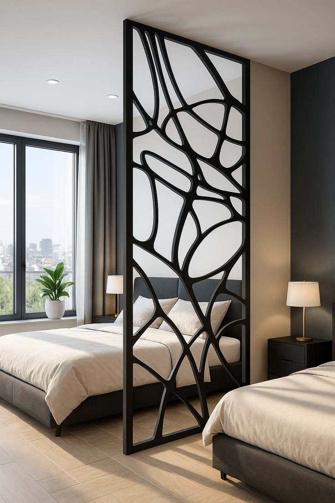
Dari konsultasi hingga barang sampai di tangan Anda, setiap tahap kami pastikan jelas dan terukur.
Diskusikan kebutuhan Anda dan kirim file desain (AI, CDR, DXF), atau biarkan tim kami bantu membuatkan desainnya.
Dapatkan estimasi harga dan waktu pengerjaan secara transparan sebelum proses produksi dimulai.
Material dipotong dan diukir menggunakan mesin CNC, laser fiber, CO2, atau galvo sesuai kebutuhan proyek.
Setiap hasil melewati quality control sebelum dikemas rapi dan dikirim ke lokasi Anda.
Tersedia berbagai pilihan material berkualitas, atau gunakan material milik Anda sendiri.
Kepuasan klien adalah prioritas utama dalam setiap proyek yang kami kerjakan.
"Hasil potongan akrilik untuk display produk kami sangat rapi dan presisi. Pengerjaan juga sesuai dengan jadwal yang dijanjikan."
"Tim sangat membantu mulai dari konsultasi desain sampai produksi. Partisi kayu custom untuk kantor kami jadi nilai jual tersendiri."
"Plat stainless untuk komponen mesin kami dipotong dengan sangat presisi. Akan order lagi untuk proyek berikutnya."
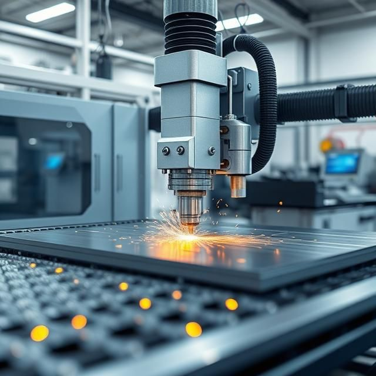
Kirimkan desain atau ceritakan kebutuhan Anda, tim kami akan membantu memberikan solusi terbaik dengan harga bersahabat dan hasil presisi.